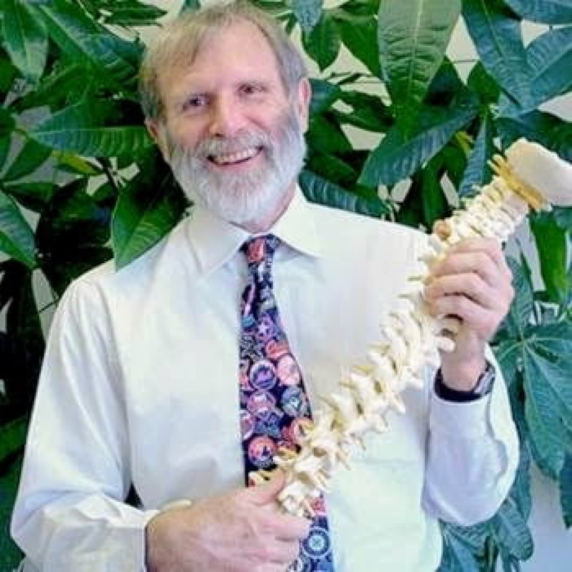

Dr. Keppler Memorial Event & Sale
Celebrate the life and legacy of Dr. James Keppler — a healer, teacher, and friend to thousands in Sacramento.
Visit Vell’s Variety to take home a keepsake from his decades of chiropractic practice: books, models, teaching materials, vintage tools, and personal items.
Location:
Vell’s Variety · 5667 Freeport Blvd · Sacramento
Hours:
Daily · 10 AM–6 PM
Scan for full memorial page: